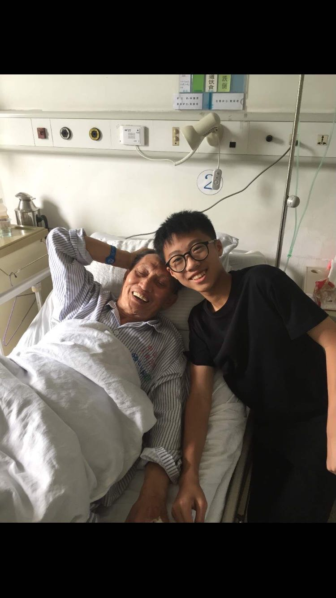
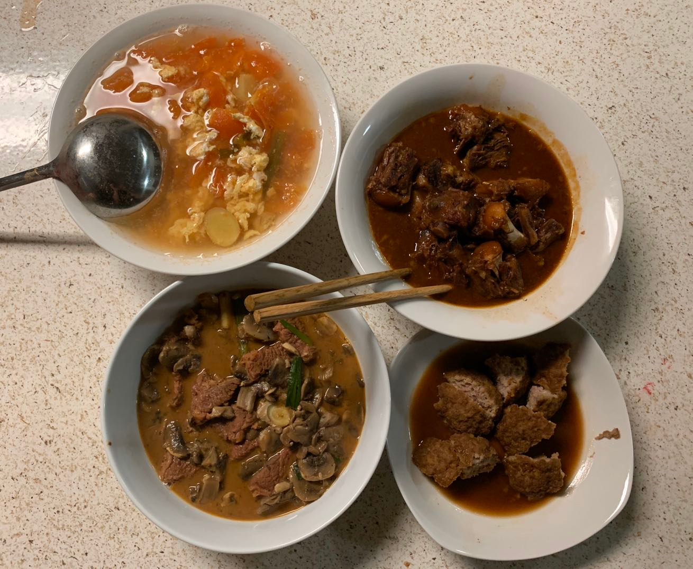

The vivid detail of a honey bee collecting nectar is a mental picture that I engrain in my memory. By using a paintbrush dipped in ink, I painstakingly transcribe the memory from my mind onto the canvas.
Traditional Chinese painting is an art form that is closely related to calligraphy. In order to recreate the majesty images of nature, the artist must have delicate control of the paintbrush. Whether it is the serene scene of the flowing lotus or the image of the temple on the ridges of Mount Emei, every exquisite detail requires the painter to be disciplined and refined.
Patience was the first virtue I learned in my younger days when I first started painting. The master held my hand through the routines as I practiced every technique religiously. As I became more skilled, I started to create my own images by merging photographs with my own imagination. I went from an inexperienced novice to a skilled journeyman.
My drawing abilities enabled me to excel in many competitions. My most decorated experience is when I had the opportunity to represent my city in ceremony at the Great Hall of the People in China. Winning this prestigious honor gave me the confidence to express my ideas in public. At that moment, I realized that painting is not just a hobby, but a lifelong passion that I will always cherish.
My current goal in art is to be able to incorporate traditional Chinese paint brush technique into modern paintings. I discovered that I can portray the skylines of San Diego in the same way I recreate the steadfast mountains of China. Whenever the brush is my hand, I feel like I have been transported into a place of refuge and self-expression. I know that whenever the pressures of life seem overwhelming, I can always return to drawing as means of finding peace and affirmation within myself.
• Taught students to paint
• Helped teachers to grade
• Prepare PPT for teachers

With Old People

Food I Cooked